It has been over a month since my last article on compiling Rust to .NET - and I have made quite a bit of progress! I had managed to fix a lot of bugs and get stack unwinding(Rust's way of handling "panics") to work. There have been also some architectural changes: I reworked the way I represent .NET assemblies.
Quick recap
rustc_codegen_clr is a Rust compiler backend(compiler module/pluigin), which allows it to produce .NET assemblies from Rust code.
CIL trees
CIL, or Common Intermediate Language, is what is actually stored in a .NET assembly. s is what I am compiling Rust code into - so it is really important that the code handling CIL is robust, and can be easily extended. Previously, I picked a very simple way to store CIL. In an assembly, Ops are stored in a contiguous array. They push and pop values from the evaluation stack.
This format is great for saving disk space, but it does not store some of the information that is crucial to me. For optimizing and validating CIL, the way ops are related to each other is key. Take a look at this sequence of ops:
ldarg.0
ldarg.1
sizeof T
mul
add
ldobj T
retIt is not immediately obvious where the values each op operates on come from. What values are added? Which ones are the inputs of the mul instruction? Using graphs makes those questions trivial to answer:

Looking at this graph, it is very easy to see which ops depend on what - and that makes it easy to optimize such a tree. Trees also have another interesting property - only the "root" of a tree may write to any variable. By restricting instructions such as "stind.i8"(set 8byte int at address) or "stloc.n" (set local variable n) to only appear in the root of a tree, I can very easily check if trees may be reordered.
Another neat thing about "CIL trees" is that they are validated at construction. If I removed one instruction from the last example, it would be quite hard to see the problem:
ldarg.0
ldarg.1
sizeof T
mul
ldobj T
retBut, if we use graphs instead, it becomes clear that this sequence of CIL ops is not valid.

Do you know what is even better? Due to the way the nodes of a tree are coded, it is not possible for a mul instruction to have 3 inputs. A mul node can hold references to exactly 2 other nodes. No more, no less. All nodes, besides Call, have a fixed amount of inputs and exactly one output. There is no way to make a mistake when constructing them.
Looking back, I feel like I should have taken this approach from the start. At the time, I thought using "linear" ops would make the codebase simpler, but, in hindsight, the added complexity is well worth it.
No dup for you
Now, it is not all sunshine and roses. CIL trees are a good abstraction, but they can't represent all valid combinations of CIL ops. There is one instruction that is particularly hard to represent in CIL:
dup.
The dup instruction has one input, but two outputs. You can't represent a method containing it using a simple tree. By definition, a tree may only have 1 path connecting any 2 nodes.
You may think: this is not a big deal, you can just allow a node to be referenced twice. Sure, it will not be a tree anymore, but who cares about semantics?
Sadly, using dup would force me to consider the exact order of values on the evaluation stack. And this is not as easy as it may seem. Consider this math formula:
f(x,y) = (x / y) / x;It would be implemented using the following CIL:
ldarg.x
ldarg.y
ldarg.x
div
divWe can reorder it to make it more readable:
ldarg.x
ldarg.y
// Divides x by y
div
// Divides (x/y) by x
ldarg.x
divYou can't use dup here: the value of y needs to be in between two xs. So, if I were to allow dup in CIL trees, I would have to keep track of the evaluation stack. Seeing as avoiding that was one of the main reason I ditched linear CIL, I am not keen on doing that.
The best solution seems to be insertring dup after the main optimzer runs, just after the trees are "flattened". This is not a priority right now, since the performance does not seem to be affected.
Even if I don't use this instruction at all, there seems to be little to no change in terms of speed. The slowdown mainly occurs in "cold" functions, and during startup. Of course, I would prefer the generated assebmlies to run buttery smooth in all scenarios, but this project mainly targets "hot" code - places where rewriting something in Rust makes the most sense.
In "hot" code the difference in benchmark results is well within the noise range, so not using dup seems to have almost no impact there.
This one weird branching trick will make you lose 4 bytes!
This representation also does not support one neat trick related to branching. In CIL, if all branches have the same amount and type of values on their stack, they can join, and the value may be used later. This makes something like this possible:
ldarg.0
ldc.i4.0
blt NEGATIVE:
// We push a float onto the stack
ldc.r4 1.0
br RESULT
NEGATIVE:
// We push a float onto the stack
ldc.r4 -1.0
RESULT:
// The "negative" and "positive" branches both pushed a float on the stack, so we can pop and return it here!
retIt is a quite nice trick, but it is just that - a trick. Does it reduce method sizes, potentially improving performance?
Yes.
Are the performance gains big enough to bother right now?
Nope.
So, I chose to sacrifice those micro-optimzations and go with a more convenient abstraction: it is not perfect, but more than good enough.
The project got runs ARM!
I had wanted to test the cross-platform potential of Rust on .NET for quite a while, but I did not have any devices to test with.
Turns out, Rasberry Pis really don't like being stepped on, and solder paste, hot glue, and prayers can only go so far, even if you are very sorry.
Thankfully, they are not the only ARM devices in the world. After some struggle, I managed to get a Rust compiler and the .NET runtime to work on my Android phone.
I did have to raise the timeout limit of some tests significantly, but, in the end, the project built and passed all the tests on ARM!
I also loaded some Rust-.NET assemblies from my PC and confirmed they work on both machines. So, while the project is mainly developed on x86_64, ARM works too!
side note: I tried to test it on a RISC-V emulator, but .NET is not supported there :(
Stack unwinding
Stack unwinding is one of the ways Rust handles panics. For those unfamiliar with the language, they are kind of like exceptions. The big difference is that they are meant to be used for super special, "everything-is-on-fire" scenarios. Rust uses the Result type for "normal" errors, but the ability to handle panics properly is still very important. All the tests rely on this: if a test panics, the harness should be able to catch that and print the test result. So, getting this up and running was very important.
The good news is that I had been able to use the .NET exception handling mechanisms to implement stack unwinding - but there were some hiccups. Sadly, in spite of the similarities between panics and exceptions, a lot of concepts do not map very nicely.
The first issue was how restrictive exception handlers are. They are well suited for their job - but I wanted them to do a bit more. In Rust, multiple handlers can share code: the handler A may execute and then jump into the middle of the handler B. In fact, it is quite hard to say any cleanup block "belongs" to any particular handler: they are all intermingled.
.NET really did not like that. It expects all catch blocks to be independent. Sure, you can have nested try/catch, but you can't just jump between handlers. This makes sense - the logic executed in a handler tends to be relatively simple. The cost of adding support for a Rust-like complex handler is probably not worth it if such a thing would be impossible to create in C#. The ability for handlers to share code is a nice optimization, but it is very Rust-specific.
In the end, I had to have a separate copy of all needed cleanup blocks for each handler. This is not very efficient, but, after some minor optimizations, it is tolerable.
Trying to exit a try
This was not the end of my struggles: the runtime is also very picky about the way you exit from a protected region of code. You can't just jump out of a try block - you have to use the leave instruction.
The reasoning behind this is a bit complicated, but, from what I could gather, having one dedicated way to jump out of try simplifies the JIT, and improves the performance. I am pretty sure I don't fully understand this myself, but I don't have to know why a rule exists to follow it. Besides, working around this turned out to be quite easy.
Since you have to use the leave instruction, branching looks a bit weird. In order to jump out of a try block using a conditional, you have to do that indirectly:
.try{
ldarg.0
ldloc.1
beq LEAVE_TRY:
// ...
LEAVE_TRY:
leave OUTSIDE_TRY
}
OUTSIDE_TRY:
// ...this may seem inefficient, but it is what Roslyn does. I assume the C# compiler developers know the runtime better than me, so - if this is what they do, it should be a good solution.
But, after all this work - stack unwinding works! It is not perfect, and I am sure I will uncover some issues in the future, but it is a great leap forward for the project.
ZSTs
There is one more concept that did not map well to .NET - Zero Sized Types. They are a bizarre feature of Rust which is not as useless as it sounds. ZSTs are often used as marker types - for example, with generics. Suppose you need to distinguish between two identical databases. The way you access them and the data you need to access them is identical - but one of them is a development environment. You could copy their definitions and have 2 identical types - but that feels clunky and error-prone. In Rust, you can make them generic, and use zero-sized marker types:
// No fields consume no space, and are present only during compilation!
struct Production;
struct Development;
struct Database<Kind>{
//..
}
impl Database<Development>{
// Can only be called on a development database, and will throw a compiler error if you try to do otherwise!
pub fn test_function_dont_use_in_prod(&mut self){
//..
}
}This is a nice abstraction - it has no runtime cost but helps you avoid mistakes.
It is not so nice to implement in .NET. In .NET, each type has a size of at least 1. Even when you ask the runtime very nicely, you will not get a zero-sized type. Period. If you accidentally forget about that, you will see some really "fun" side effects.
By far, my favorite one was related to Rust enums(tagged unions). Most of the time, the enum variant data is placed after the tag - which is fine, until you have an enum variant without any fields. Its size is supposed to be zero, and so it lays at the very end of the "parent" type. If it really had the size of 0, nothing would happen - but it does not.
When the "parent" type it belonged to was copied, it was copied too. So, instead of copying 8 bytes, the runtime copied 8 + 1(the size of a "zero" sized field) bytes. Because of that, it overrode the very next bit of data - which may or may not be very important. This is not the fault of the runtime - I was doing something that is explicitly not allowed.
Still, this forced me to be quite a bit more careful when it comes to type sizes. I am pretty sure I plugged all the major holes related to ZSTs, but I am also expecting to find more of them.
Native libs
This feature is not yet finished - but I plan on allowing you to reference native shared libraries in Rust code compiled for .NET. This basically involves the linker autogenerating the necessary PInvoke method declarations. This feature already works for libc, which made testing a whole lot easier. Extending it to all shared libraries would make a lot of more complex crates work out of the box - but this is still a feature I am not so certain about. It has the unfortunate side-effect of making code less ".NETish" and portable - which is something I want to avoid. I will probably just lock this behind a config flag.
Fuzzing
Since I am able to use libc, I have been able to test the compiler using a modified version of rustlantis. It is a Rust compiler fuzzer, which can detect a lot of compiler bugs automatically. It is geared more towards mature Rustc backends, but it still was very helpful. I have generated 100 programs that rustc_codegen_clr compiled incorrectly, and I have fully fixed ~39% percent of them. Another ~10% of them run correctly when optimizations are enabled. When fixing those, I found some interesting differences between Rust and .NET.
Saturating vs wrapping casts
There are many things that Rust and .NET do differently. However, there was one difference that I did not expect: floating-point to integer casts.
In Rust, float to int casts are saturating. In .NET they are wrapping. What is the difference?
Suppose you cast a value of 257.45 to a byte(u8 in Rust).
The result in Rust will be 255 since it is clamped to the range that a byte may represent.
In C#, you will get 1, since the cast wraps around.
The number gets "modulo-d" to the requested range. If it is too big, it will just wrap right around. This is a bit unusual, but it seems way more weird when you deal with unsigned integers. Casting 129.0 to sbyte(i8 in Rust) will result in -127.
using System;
public class C
{
public static void Main()
{
float f = 129.0f;
Console.WriteLine(unchecked((sbyte)f));
}
}You know what is even more bizarre? This is not always the case! When you cast a *constant* that is out of range, you will get... 0!
using System;
public class C
{
const float f = 129.0f;
public static void Main()
{
Console.WriteLine(unchecked((sbyte)f));
}
}I am pretty sure this is the documented and intended behavior, but it still felt kind of weird to stumble across something like this. Now, let's get back to the problem at hand: compiling Rust-style casts for .NET.
It is important to get casts right: some programs may rely on this behavior. My solution was quite simple: I just checked if the float was in range before the cast. In the end, it looks something like this:
private static sbyte cast_f32_i8(float P_0)
{
if (!(P_0 < 127f))
{
return 127;
}
if (!(P_0 > -128f))
{
return -128;
}
return (sbyte)P_0;
}I could maybe try to optimize this more using Math.Min/Math.Max, but this should suffice for now.
Dead-code elimination
I also worked on one more thing: adding basic dead-code elimination to my linker. The compiler frontend does quite a bit of that by itself, but it can't "see" across crate(library) boundaries. Since it can't tell for certain a part of the standard library is not being used, it has to keep all public functions. So, the linker needs to only keep those functions that are really needed. Without that, the final assemblies ballooned to the size of 8.0 MB. This makes debugging/analyzing the assemblies a chore - they lag ILSpy and are hard to navigate through.
The algorithm I used is very simple, and based on copying GCs. I recorded a video on implementing it for functions - so, if you are interested in the inner workings of the project, feel free to watch. It is very much a low-production "a guy tries to program and not stumble over his words too much" kinda thing, tough.
In the end, removing dead functions cut the assembly size by half. Why only half? Turns out, a lot of the assembly size comes from the types(which are a bit harder to eliminate) and static data. My current way of storing static data is far from optimal - I basically generate a function that initializes it, byte by byte. There is a way to store binary blobs directly in an assembly, but I have not looked into doing that just yet. They do make ~50% of the final assembly(after unneeded methods are removed), so I probably will fix that soon, but removing unused statics should almost eliminate this problem for now.
Eliminating statics should not be that hard, since I would have to "only" check if their value or address is ever read, and then remove their initializer functions. As for types, they are a completely different breed. First of all, I will need to refactor type paths - since they are currently implemented in a very dumb and clunky way.
Type paths
I need to refactor type paths at some point anyway, because of a bug related to nested classes. Recently, I started to put type names in quotes - this enables me to use any sequence of characters and keep names consistent with Rust. This messes with nested classes.
The bug is really simple:
I should be saving type paths like this: 'Namespace.Class'/'NestedType' I am saving them like this: 'Namespace.Class/NestedType'
The Mono ILASM ignores the quotes when parsing /, and interprets it as a class separator.
CoreCLR ILASM assumes everything between two ' is a name, and thinks \ is a part of this name. Thus, it can't find the nested class.
I think the CoreCLR ILASM is correct here, and the first option works for all ILASMs, so I will switch to using the more clear/correct syntax.
Closing thoughts
While the project is still far from being complete, I feel like I have made some pretty substantial progress.
Thanks to new features, such as stack unwinding, testing is going to be much easier. Currently, the the single biggest roadblock is the low reliability of the project: it is mostly feature-complete (~70% done), but miscompilations are far too common to use for anything serious.
It is quite hard to juggle school and working on the project, especially with my high school finals(matura exam) creeping closer and closer. I probably won't be able to work on it nearly as much, since I will have to revise some time-consuming stuff(polish literature, basics of C++). Still, I plan on focusing on refactors/bugfixes - those kinds of things can be slightly more self-contained, which should enable me to work on the project under time constraints.
I would also like to thank you, the reader, for the positive reception those articles and the project had. It really brightens my day and helps me in finding motivation.
Goodbye, and see you next time!